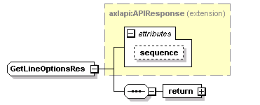
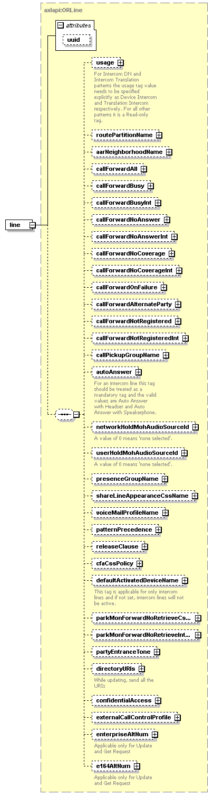

| diagram |  | ||||||||||||
| namespace | http://www.cisco.com/AXL/API/10.5 | ||||||||||||
| type | extension of axlapi:APIResponse | ||||||||||||
| properties |
|
||||||||||||
| children | return | ||||||||||||
| used by |
|
||||||||||||
| attributes |
|
||||||||||||
| source | <xsd:complexType name="GetLineOptionsRes"> <xsd:complexContent> <xsd:extension base="axlapi:APIResponse"> <xsd:sequence> <xsd:element name="return"> <xsd:complexType> <xsd:sequence> <xsd:element name="line" type="axlapi:ORLine"/> </xsd:sequence> </xsd:complexType> </xsd:element> </xsd:sequence> </xsd:extension> </xsd:complexContent> </xsd:complexType> |
| diagram | |||
| properties |
|
||
| children | line | ||
| source | <xsd:element name="return"> <xsd:complexType> <xsd:sequence> <xsd:element name="line" type="axlapi:ORLine"/> </xsd:sequence> </xsd:complexType> </xsd:element> |
| diagram |  | ||||||||||||
| type | axlapi:ORLine | ||||||||||||
| properties |
|
||||||||||||
| children | usage routePartitionName aarNeighborhoodName callForwardAll callForwardBusy callForwardBusyInt callForwardNoAnswer callForwardNoAnswerInt callForwardNoCoverage callForwardNoCoverageInt callForwardOnFailure callForwardAlternateParty callForwardNotRegistered callForwardNotRegisteredInt callPickupGroupName autoAnswer networkHoldMohAudioSourceId userHoldMohAudioSourceId presenceGroupName shareLineAppearanceCssName voiceMailProfileName patternPrecedence releaseClause cfaCssPolicy defaultActivatedDeviceName parkMonForwardNoRetrieveCssName parkMonForwardNoRetrieveIntCssName partyEntranceTone directoryURIs confidentialAccess externalCallControlProfile enterpriseAltNum e164AltNum | ||||||||||||
| attributes |
|
||||||||||||
| source | <xsd:element name="line" type="axlapi:ORLine"/> |